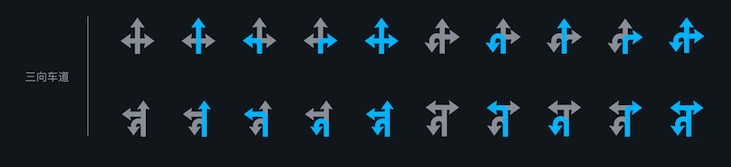
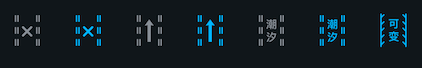

LBS接口文档
一、概述
LBS接口对外提供的类统一为一个，即MapAutoService，位于com.baidu.naviauto.sdk.api包下，整个接口主要包含两部分，一部分是外部获取地图数据，另一部分是外部向地图
二、接口使用
将SDK文件导入项目，在build.gradle文件中添加SDK的依赖即可，同时SDK依赖gson进行数据解析，所以还需添加gson的依赖，依赖添加示例如下：
implementation "com.google.code.gson:gson:2.8.0"implementation files('libs/lbs-service-sdk-1.0.x.aar')
2.1 获取地图数据
获取地图数据之前，需要初始化SDK，相关代码如下：
xMapAutoService.getInstance().init(context, packageName, initParam, new OnInitStateChangeListener() { public void onSuccess() { // 初始化成功 } public void onFailure(int errorCode, String errorMessage) { // 初始化失败 }});此外，外部还可自行实现数据传输的通道，实现接口IChannel即可，然后在初始化时使用下面带通道参数的初始化方法即可，如下：
xxxxxxxxxxMapAutoService.getInstance().init(this,channelImpl, getPackageName(), null, new OnInitStateChangeListener() { public void onSuccess() { // 初始化成功 } public void onFailure(int errorCode, String errorMessage) { // 初始化失败 }});由于初始化是异步操作，后续所有接口的执行，都需要在初始化成功之后再执行，否则所有接口将无法执行，建议将初始化时机放在Application的onCreate方法里。
2.2 向地图提供数据
若需要向地图提供所依赖的数据，例如车速、汽车档位信息等，则使用providerSystemData方法，传入ISystemDataAPI接口的实现类即可，示例如下：
xxxxxxxxxxMapAutoService.getInstance().providerSystemData(new ISystemDataAPI() { // 具体的接口实现});三、接口功能对应清单
下面分模块介绍各接口和功能的对应关系，具体的接口参数、返回值等接口细节请参考详细的JavaDoc文档。
3.1 底图控制模块
| 功能 | 方法名 |
|---|---|
| 打开地图 | openMap |
| 地图退到后台 | backToBackground |
| 退出地图，杀掉地图进程 | exitMap |
| 更新路线偏好 | updateRoutePlanPreference |
| 纠正路线（eg：在桥上、在辅路等） | correctNaviRoute |
| 个性化路线（eg：不走xxx路） | customNaviRoute |
| 刷新当前路线 | refreshRoute |
| 是否开启全览模式 | setFullRouteView |
| 打开关闭路况 | setRoadCondition |
| 设置白天/黑夜模式 | setDayNightMode |
| 放大/缩小地图 | zoomMap |
| 最大、最小地图 | zoomMapMax |
| 移动地图 | moveMap |
| 设置地图显示模式，正北/跟随切换 | setMapShowMode |
| 设置播报模式，详细/简洁/静音 | setNaviTTSMode |
| 获取播报模式，详细/简洁/静音 | getNaviTTSMode |
| 打开关闭导航声音 | setTTSOpen |
| 设置TTS播放音量 | setTTSVolume |
| 获取TTS播放音量 | getTTSVolume |
| 底图添加覆盖物 | addMarker |
| 回到当前位置 | showCurrentLocation |
| 跟进GPS点在底图上画线 | setMapLineData |
3.2 导航模块
| 功能 | 方法名 |
|---|---|
| 路线选择 | selectRoute |
| 路径规划 | routePlan |
| 开始导航 | startNavi |
| 结束导航 | stopNavi |
| 是否在导航模式 | isInNavi |
| 获取导航类型 | getNaviType |
| 切换导航类型 | switchNaviType |
| 设置导航探测的隧道信息长度 | setDetectTunnelDistance |
| 获取导航目的地 | getNaviDestination |
| 添加途经点 | addViaPoint |
| 获取下一步TBT引导信息 | getTBTInfo |
| 获取前方拥堵描述信息 | getAheadRoadConditionText |
| 获取前方限速 | getSpeedLimit |
| 获取前方红绿灯描述信息 | getAheadTrafficLightText |
| 获取剩余信息，剩余时间、距离 | getRemainInfo |
| 是否路过xxx路 | isPassRoad |
| 进入巡航模式 | startCruise |
| 退出巡航模式 | stopCruise |
| 是否在巡航模式 | isInCruise |
| 获取MapMatch数据 | getMapMatchInfo |
| 设置疲劳驾驶时间 | setFatigueDrivingTime |
| 交换途经点 | changeRoutePlanVia |
| 删除途经点 | deleteRoutePlanVia |
3.3 检索模块
| 功能 | 方法名 |
|---|---|
| 关键字检索 | requestKeywordSearch |
| 周边检索 | requestNearBySearch |
| Sug(推荐/联想)检索 | requestSugSearch |
| 沿途检索 | requestAlongRouteSearch |
| 反Geo检索（逆地址查询） | requestReverseGeoSearch |
| 取消指定检索请求 | cancelSearchRequest |
| 取消全部检索请求 | cancelAllSearchRequest |
| 搜索结果排序 | searchResultSortByType |
3.4 地图数据监听模块
| 功能 | 方法名 |
|---|---|
| 添加GPS定位结果监听 | addOnLocationChangeListener |
| 移除GPS定位结果监听 | removeOnLocationChangeListener |
| 添加GPS状态信息监听 | addOnGpsStatusChangeListener |
| 移除GPS状态信息监听 | removeOnGpsStatusChangeListener |
| 添加电子眼信息监听 | addOnCameraInfoChangeListener |
| 移除电子眼信息监听 | removeOnCameraInfoChangeListener |
| 添加行政区域变化监听 | addOnDistrictInfoChangeListener |
| 移除行政区域变化监听 | removeOnDistrictInfoChangeListener |
| 添加限速信息变化监听 | addOnSpeedLimitChangeListener |
| 移除限速信息变化监听 | removeOnSpeedLimitChangeListener |
| 添加组队出行状态变化监听 | addOnTeamTripChangeListener |
| 移除组队出行状态变化监听 | removeOnTeamTripChangeListener |
| 添加安全信息变化监听 | addOnSafetyInfoChangeListener |
| 移除安全信息变化监听 | removeOnSafetyInfoChangeListener |
| 添加导航状态变化监听 | addOnNaviStatusChangeListener |
| 移除导航状态变化监听 | removeOnNaviStatusChangeListener |
| 添加主动推荐数据监听 | addRecommendChangeListener |
| 移除主动推荐数据监听 | removeRecommendChangeListener |
| 添加地图推送POI事件 | addPushEventListener |
| 移除地图推送POI事件 | removePushEventListener |
| 添加疲劳驾驶事件监听 | addFatigueDrivingListener |
| 移除疲劳驾驶事件监听 | removeFatigueDrivingListener |
| 添加推荐停车场监听 | addOnParkingLotListener |
| 移除推荐停车场监听 | removeOnParkingLotListener |
| 添加开始导航到某个停车场的监听 | addOnStartNaviToParkingLotListener |
| 移除开始导航到某个停车场的监听 | removeOnStartNaviToParkingLotListener |
| 添加车道线信息变化监听 | addOnLaneInfoChangeListener |
| 移除车道线信息变化监听 | removeOnLaneInfoChangeListener |
| 添加高速服务区信息变化监听 | addOnHighWaySubscribeInfoChangeListener |
| 移除高速服务区信息变化监听 | removeOnHighWaySubscribeInfoChangeListener |
| 添加放大图信息变化监听 | addOnEnlargeInfoChangeListener |
| 移除放大图信息变化监听 | removeOnEnlargeInfoChangeListener |
| 添加TBT信息（下一步引导信息）监听 | addOnTurnInfoChangeListener |
| 移除TBT信息（下一步引导信息）监听 | removeOnTurnInfoChangeListener |
| 添加剩余信息监听 | addOnRemainInfoChangeListener |
| 移除剩余信息监听 | removeOnRemainInfoChangeListener |
| 添加MapMatch信息变化监听 | addOnMapMatchInfoChangeListener |
| 移除MapMatch信息变化监听 | removeOnMapMatchInfoChangeListener |
| 添加续航里程信息变化监听 | addOnEvRangeOnRouteInfoListener |
| 移除续航里程信息变化监听 | removeOnEvRangeOnRouteInfoListener |
| 添加导航中前方摄像头信息变化监听 | addOnForwardCameraInfoChangeListener |
| 移除导航中前方摄像头信息变化监听 | removeOnForwardCameraInfoChangeListener |
| 添加导航中区间限速变化监听 | addOnIntervalSpeedLimitChangeListener |
| 移除导航中区间限速变化监听 | removeOnIntervalSpeedLimitChangeListener |
| 添加家/公司的行程预测 | addOnHomeAndCompanyForecastListener |
| 移除家/公司的行程预测 | removeOnHomeAndCompanyForecastListener |
| 添加偏航状态变化监听 | addOnYawStatusChangeListener |
| 移除偏航状态变化监听 | removeOnYawStatusChangeListener |
| 添加巡航状态变化监听 | addOnCruiseStatusChangeListener |
| 移除巡航状态变化监听 | removeOnCruiseStatusChangeListener |
| 添加多屏地图显示的状态监听 | addOnMutiScreenMapShowListener |
| 移除多屏地图显示的状态监听 | removeOnMutiScreenMapShowListener |
| 添加地图底图绘制第一帧的回调 | addOnMapInitCompleteListener |
| 移除地图底图绘制第一帧的回调 | removeOnMapInitCompleteListener |
| 添加家/公司 变化监听 | addHomeAndCompanyUpdateListener |
| 移除家/公司 变化监听 | removeHomeAndCompanyUpdateListener |
3.5 页面跳转模块
| 功能 | 方法名 |
|---|---|
| 跳转到POI详情页 | openPoiDetailPage |
| 跳转到检索页 | openSearchPage |
| 跳转到检索历史页 | openSearchHistoryPage |
| 跳转到收藏夹页 | openFavoritePage |
| 跳转到家、公司的设置页 | openHCSettingPage |
| 跳转到导航设置页 | openNaviSettingPage |
| 打开导航中沿途搜页面，不需要返回沿途搜结果数据 | openAlongRouteNaviPage |
| 跳转到检索结果页 | openSearchResultPage |
3.6 组队出行模块
| 功能 | 方法名 |
|---|---|
| 获取是否处于队伍中 | isInTeamTrip |
| 创建队伍 | createTeamTrip |
| 加入队伍 | joinTeamTrip |
| 设置队伍目的地 | setTeamTripDestination |
| 发起组队导航 | startTeamTripNavi |
| 显示组队全览图 | showTeamTripFullView |
| 退出所在队伍 | quitTeamTrip |
3.7 收藏夹模块
| 功能 | 方法名 |
|---|---|
| 添加poi到收藏夹 | addFavoritePoi |
| 获取家/公司信息 | getHCInfo |
| 设置家/公司信息 | setHCInfo |
| 获取家/公司的设置状态 | isHCSet |
3.8 工具类模块
| 功能 | 方法名 |
|---|---|
| 设置为调试模式 | setDebug |
| 坐标转换，WGS转国测局 | coordinateWGS2GCJ |
| 坐标转换，国测局转WGS | coordinateGCJ2WGS |
3.9 其它模块
| 功能 | 方法名 |
|---|---|
| 当前位置查询 | getCurrentLocation |
| 地图是否在前台 | isMapFront |
| 行政区域查询 | getDistrictDetailInfo |
| 获取速度 | getSpeed |
| 获取车牌信息 | getUserCarPlate |
| 目的地预测查询 | requestRouteForecastInfo |
| 发起获取主动推荐数据请求 | requestRecommendData |
| 获取地图版本信息 | getMapVersion |
| 在多屏底图展示POI列表对应的水滴 | showPoiOnMutiScreenMap |
| 清除多屏底图展示的POI列表水滴 | clearPoiOnMutiScreenMap |
3.10 限定AIDL传输的模块
| 功能 | 方法名 |
|---|---|
| 绘制多屏地图 | drawMutiScreenMap |
| 销毁多屏地图 | destroyMutiScreenMap |
| 多屏地图反控 | dispatchTouchEvent |
3.11 依赖系统数据的模块
依赖系统的接口使用MapAutoService的provideSystemData方法，传递一个`ISystemDataAPI接口的实现类即可，在实现类中，各回调接口的方法名和功能对应如下：
| 功能 | 方法名 |
|---|---|
| 获取系统当前网络类型 | getNetworkType |
| 打开系统设置页面 | openSystemSettingPage |
| 拨打电话 | startCall |
| 获取剩余油量 | getRemainOil |
| 获取剩余电量 | getRemainCharge |
| 获取行驶里程 | getDriveDistance |
| 获取续航里程 | getRechargeDistance |
| 获取车辆光感信号 | getLightStatus |
| 获取熄火信号 | isShutdown |
| 获取IMU数据 | getIMUData |
| 获取车速 | getSpeed |
| 获取当前车辆档位 | getCarLevel |
| 获取当前车辆转向 | getCarGear |
| 获取摄像头图像 | getCameraImage |
| 设置系统数据变化监听 | onSystemDataChange |
系统数据变化监听器
| 功能 | 方法名 |
|---|---|
| 熄火状态更新 | onShutdownStatusUpdate |
| 车速更新 | onSpeedUpdate |
| 剩余油量更新 | onRemainOilUpdate |
| 剩余电量更新 | onRemainChargeUpdate |
| 行驶里程更新 | onDriveDistanceUpdate |
| 续航里程更新 | onRechargeDistanceUpdate |
| 车辆光感信号更新 | onLightStatusUpdate |
| IMU数据更新 | onIMUDataUpdate |
四、其它说明
4.1 车道线接口使用说明
车道线接口目前返回两个关键参数，status和LaneInfo，其中status的含义参考JavaDoc即可，LaneInfo代表整个车道线View，LaneInfo包含多个LaneItem，每个LaneItem就代表了其中一个显示的车道线，这里重点描述如何将LaneItem转换为一个车道线图像。
LaneItem包含三个关键字段laneTypeInfo、laneVariationType、directionList，laneTypeInfo的laneType字段代表车道线类型，
- 当
laneType为非法值时不做后续处理 - 当
laneType为普通类型（LANE_TYPE_NORMAL）、公交车道(LANE_TYPE_BUS)时，根据directionList的具体值做图像转换处理，directionList的单项为LaneDirection，LaneDirection包含两个关键字段，一个为direction，另一个为validType，direction代表四种基础车道线方向，分别为：左转、直行、右转、掉头，validType含义为车道方向是否可通行，车道方向可通行和不可通行将直接影响对应的direction是否需要高亮显示（高亮代表可通行） - 当
laneType既不是普通类型，也不是公交车道时，则直接使用指定类型的车道线资源
下面举例说明一下：
如上图，根据上面的规则，该车道线View整体为一个LaneInfo，LaneInfo包含两个子元素，一个LaneItem代表左侧（左转+直行）车道，一个LaneItem代表右侧（右转+直行）车道，对于左侧LaneItem，又包含两个LaneDirection，一个LaneDirection为左转，并且其validType字段为不可通行，所以左转方向未高亮显示，另一个LaneDirection为直行，并且其validType字段为可通行，所以直行方向高亮显示，同理右侧LaneItem代表的车道就不做过多赘述了。
所以车道线基本类型包含两大类
- 四种基本转向（左转、直行、右转、掉头）和公交车道，加起来一共五种类型的组合
- 特殊车道，有单独的资源对应
其中单方向车道一共包含8种（蓝色高亮代表可通行，灰色代表不可通行，下同），具体如下：
双方向车道一共包含24种，具体如下：

三方向车道，一共包含20种，具体如下：

四方向车道，一共包含6种，具体如下：
公交车道，一共包含10种，具体如下：
特殊车道，一共包含9种，具体如下，分别对应（叉号潮汐车道不可行、叉号潮汐车道可行、前行箭头潮汐车道不可行、前行箭头潮汐车道可行、文字潮汐车道不可行、文字潮汐车道可行、可变车道、多成员车道不可行、多成员车道可行、文字公交车道）：


以上是关于车道线的全部资源示例，外部集成可参考该资源示例进行开发。
4.2 转向信息示例
| 功能 | 图标 |
|---|---|
| 直行 | |
| 右前方转弯 | |
| 右转 | |
| 右后方转弯 | |
| 掉头 | |
| 左后方转弯 | |
| 左转 | |
| 左前方转弯 | |
| 环岛 | |
| 环岛出口 | |
| 普通/JCT/SAPA二分歧 靠左 | |
| 普通/JCT/SAPA二分歧 靠右 | |
| 左侧走本线 | |
| 靠最左走本线 | |
| 右侧走本线 | |
| 靠最右走本线 | |
| 中间走本线 | |
| IC二分歧左侧走IC | |
| IC二分歧右侧走IC | |
| 普通三分歧/JCT/SAPA 靠最左 | |
| 普通三分歧/JCT/SAPA 靠最右 | |
| 普通三分歧/JCT/SAPA 靠中间 | |
| 起始地 | |
| 目的地 | |
| 途经点1 | |
| 途经点2 | |
| 途经点3 | |
| 途经点4 | |
| 进入渡口 | |
| 脱出渡口 | |
| 收费站 | |
| IC二分歧左侧直行走IC | |
| IC二分歧右侧直行走IC | |
| 普通/JCT/SAPA二分歧左侧 直行 | |
| 普通/JCT/SAPA二分歧右侧 直行 | |
| 普通/JCT/SAPA三分歧左侧 直行 | |
| 普通/JCT/SAPA三分歧中央 直行 | |
| 普通/JCT/SAPA三分歧右侧 直行 | |
| IC三分歧左侧走IC | |
| IC三分歧中央走IC | |
| IC三分歧右侧走IC | |
| IC三分歧左侧直行 | |
| IC三分歧中间直行 | |
| IC三分歧右侧直行 | |
| 八方向靠左直行 | |
| 八方向靠右直行 | |
| 八方向靠最左侧直行 | |
| 八方向沿中间直行 | |
| 八方向靠最右侧直行 | |
| 八方向左转+随后靠左 | |
| 八方向左转+随后靠右 | |
| 八方向左转+随后靠最左 | |
| 八方向左转+随后沿中间 | |
| 八方向左转+随后靠最右 | |
| 八方向右转+随后靠左 | |
| 八方向右转+随后靠右 | |
| 八方向右转+随后靠最左 | |
| 八方向右转+随后沿中间 | |
| 八方向右转+随后靠最右 | |
| 八方向左前方靠左侧 | |
| 八方向左前方靠右侧 | |
| 八方向右前方靠左侧 | |
| 八方向右前方靠右侧 | |
| 八方向掉头+随后靠左 | |
| 八方向掉头+随后靠右 | |
| 八方向掉头+随后靠最左 | |
| 八方向掉头+随后沿中间 | |
| 八方向掉头+随后靠最右 | |
| 环岛向前 | |
| 环岛向左 | |
| 环岛向左后 | |
| 环岛向左前 | |
| 环岛向右 | |
| 环岛向右后 | |
| 环岛向右前 | |
| 环岛向后 |
五、混淆说明
xxxxxxxxxx-keep class com.baidu.naviauto.lbs.**{*;}-keep interface com.baidu.naviauto.lbs.**{*;}-dontwarn com.baidu.naviauto.lbs.**
Update Log
| author | content |
|---|---|
| huangqing02@baidu.com | first version |
| huangqing02@baidu.com | add aidl module and system module |
| huangqing02@baidu.com | add some listener interface |
| huangqing02@baidu.com | add turninfo icon examples |
| huangqing02@baidu.com | add detail description for laneInfo interface |
| zengyahui@baidu.com | 新增和删减部分接口 |
| zengyahui@baidu.com | 更新系统接口，增加混淆规则 |